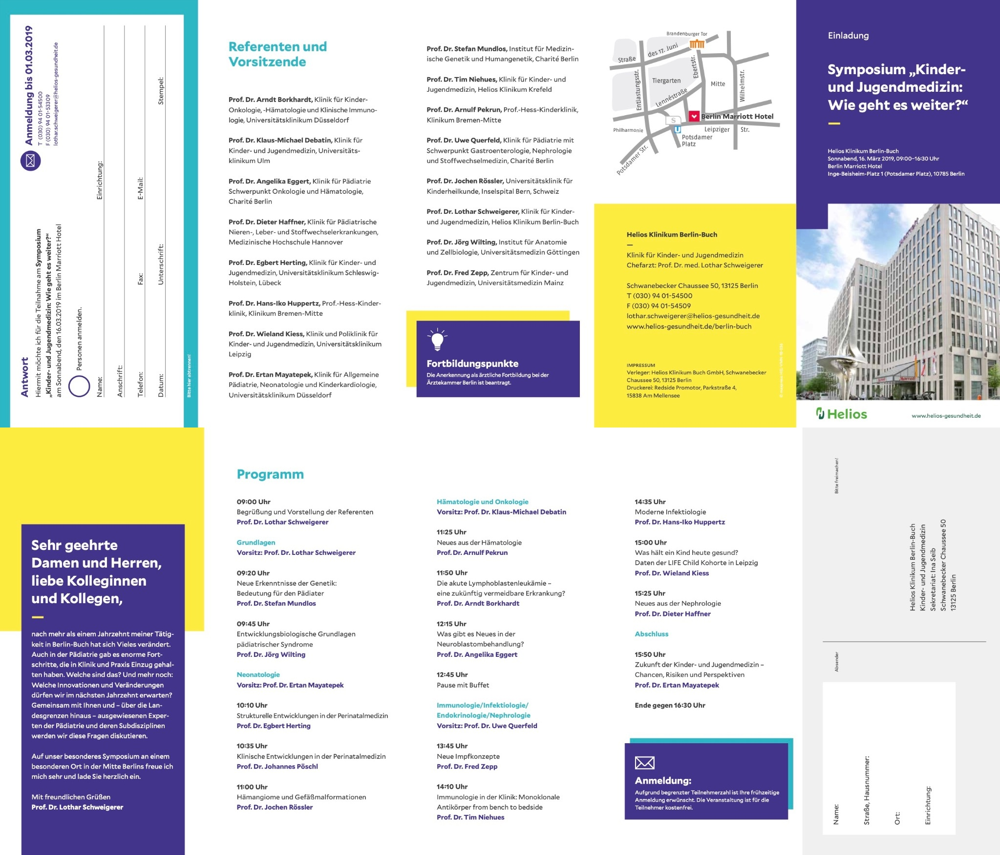
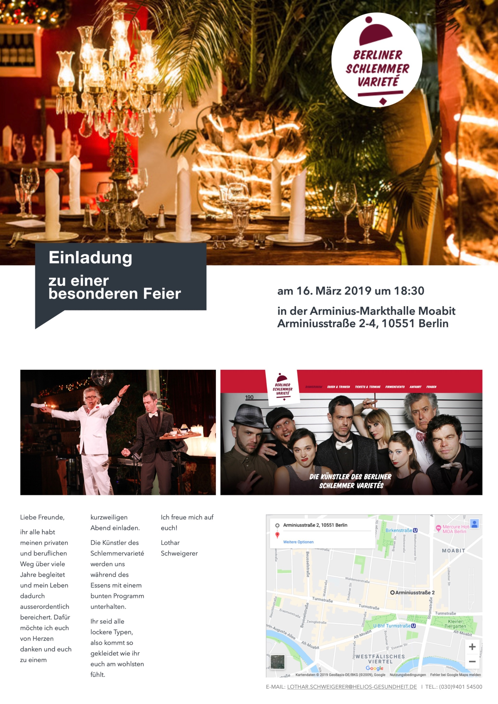

Dreizehn Jahre Helios lagen hinter mir. Eigentlich noch viel mehr. Ein ganzes Berufsleben. Zwar hatte ich bereits einen Vertrag unterschrieben und würde noch zwei Jahre als Chefarzt der Klinik für Kinder- und Jugendmedizin nach Frankfurt (Oder) wechseln, trotzdem fühlte sich das Ende meiner Berliner Zeit wie ein Schlusspunkt an. Es war Zeit, innezuhalten. Und vor allem zu feiern. Allerdings nicht so, wie das bei Abschiedsveranstaltungen üblich ist.
Ich konnte mit solchen Veranstaltungen nie viel anfangen. Alle erscheinen geschniegelt im dunklen Anzug oder Kostüm. Vorne sitzt ein Schrammelquartett aus zwei Geigen, Bratsche und Cello und liefert tapfer sein todlangweiliges Programm ab. Erster Gähner. Danach marschieren die Funktionäre ans Rednerpult. Krankenhausvorstände, Lokalpolitiker und andere Würdenträger erklären, warum man eigentlich schon immer ein Supertyp von Mensch gewesen sei, obwohl man davon die ganzen Jahre vorher wenig bemerkt hatte. Zweiter Gähner. Anschließend Häppchen, lauwarmer Sekt und der übliche Smalltalk. Und dann gehts nach Hause. So sollte mein Abschied nicht sein.
Gemeinsam mit Susanne Hansch, der Leiterin der Öffentlichkeitsarbeit unseres Klinikums, entstand deshalb ein anderes Konzept. Susanne Hansch verstand, worum es mir ging. Sie organisierte das Ganze mit Ruhe, Überblick und einem Gespür für Menschen. Ohne sie wäre dieser Tag nicht so geworden, wie er mir bis heute in Erinnerung geblieben ist.
Den Vormittag füllte ein wissenschaftliches Symposium im Marriott-Hotel am Potsdamer Platz. Es war bewusst keine Abschiedsveranstaltung, sondern eine Fortbildung unter dem Titel „Kinder- und Jugendmedizin – Wie geht es weiter?“. Renommierte Referenten aus nahezu allen Bereichen der Pädiatrie sollten einen Ausblick auf die zukünftige Entwicklung unseres Faches geben. Ihre Auswahl spiegelte meinen eigenen beruflichen Weg wider.

Stefan Mundlos stand für Berlin, Jörg Wilting für Göttingen. Egbert Herting, Johannes Pöschl und Jochen Rössler erinnerten an Göttingen, Heidelberg und Essen. Klaus-Michael Debatin leitete den onkologischen Teil; wir kannten uns seit unserer gemeinsamen Assistenzarztzeit in Heidelberg. Arnulf Pekrun, Arndt Borkhardt und Angelika Eggert begleiteten weitere Stationen meines Weges. Die Immunologie übernahm Uwe Querfeld mit Fred Zepp, Tim Niehues, Hans-Iko Huppertz, Wieland Kiess und Dieter Haffner. Den Abschluss gestaltete Ertan Mayatepek, mit dem ich Jahrzehnte zuvor gemeinsam als Assistenzarzt in Heidelberg begonnen hatte. Es waren an diesem Vormittag nicht einfach Referenten. Es waren Menschen, die mein Berufsleben über viele Jahre begleitet hatten.
Nach einer längeren Pause trafen wir uns am Abend im Berliner Schlemmer-Varieté in der Arminius-Markthalle. Auch die Gästeliste war ungewöhnlich. Ich hatte nicht alle eingeladen, die offiziell wichtig waren, sondern diejenigen, die mir wichtig waren: meine Familie, Freunde aus der Heimat, Studienfreunde aus Gießen, Weggefährten aus Heidelberg, Marburg, Essen, Göttingen und Berlin, meine Oberärzte, langjährige Mitarbeiterinnen und Mitarbeiter sowie Menschen, die mich gefördert oder begleitet hatten. Wir waren insgesamt 130 Personen.Aus dem damaligen Vorstand des Helios-Klinikums Berlin-Buch war übrigens niemand dabei. Das war Absicht.

Bevor das Abendessen begann, hielt ich selbst einen Vortrag. Es war kein Rückblick auf Forschungspreise oder Klinikbauten, sondern die Geschichte meines eigenen Weges. Sie begann mit meinem saumäßigen Abitur und der Frage, was aus mir wohl einmal werden sollte. Vorarbeiter? Hamburger-Brater? Förster? Revolutionär oder Künstler? Rockstar? Dressman? Rennfahrer? Astronaut? Erst ganz am Schluss tauchte auf der Leinwand auch der Beruf auf, der es schließlich geworden war: Arzt. Der Gag kam an. So hatte ich mir den Einstieg vorgestellt.
Danach erzählte ich vom Losentscheid, ohne den ich wahrscheinlich nie Medizin studiert hätte, von den schwierigen ersten Semestern in Gießen und von den vielen Menschen, die mir damals halfen, nicht schon am Anfang wieder aus der Kurve zu fliegen. Es folgten die Promotion, die Pharmakologie, San Francisco, Heidelberg, Marburg, Essen, Göttingen und schließlich Berlin. Es war keine Heldengeschichte. Eher die Geschichte eines Jungen aus dem Hunsrück, bei dem vieles anders gekommen war, als es zunächst ausgesehen hatte, und der an entscheidenden Stellen das Glück hatte, den richtigen Menschen zu begegnen.
Zum Schluss liefen Bilder aus allen Stationen meines Lebens über die Leinwand. Freunde, Lehrer, Kollegen, Mitarbeiter, Förderer und Patienten erschienen noch einmal, begleitet von You and I Will Meet Again von Tom Petty. Der letzte Satz des Abspanns lautete: „Danke, dass ihr mein Leben bereichert habt.“ Einen passenderen Schlusspunkt hätte ich mir für diesen Lebensabschnitt kaum vorstellen können.
Danach begann das Abendessen. Zwischen den einzelnen Gängen traten immer wieder die Künstler des Schlemmer-Varietés auf. Akrobatik, Comedy und Musik wechselten sich ab. Es wurde viel gelacht, erzählt und an alte Geschichten erinnert. Keine Funktionärsreden, keine Lobhudelei und kein Schrammelquartett, sondern ein Abend mit Menschen, die mich durch mein Leben begleitet hatten. Wir feierten bis weit nach Mitternacht. Es war einer der schönsten Abende meines Lebens.